Preserving Family Traditions, One Recipe at a Time
Explore our collection of cherished family recipes and share your own.
 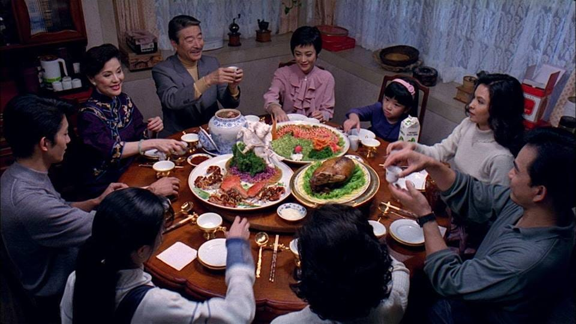
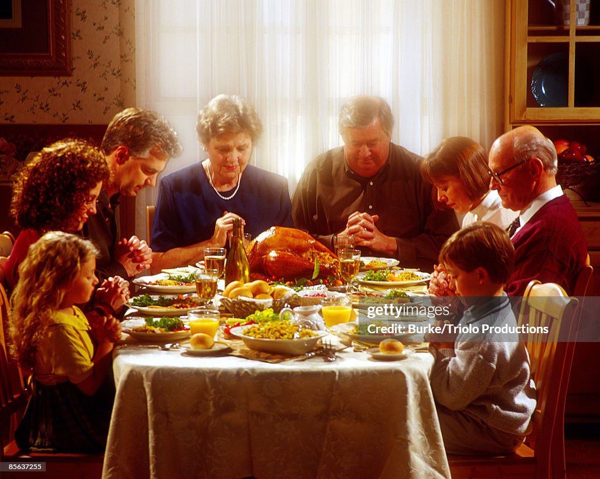
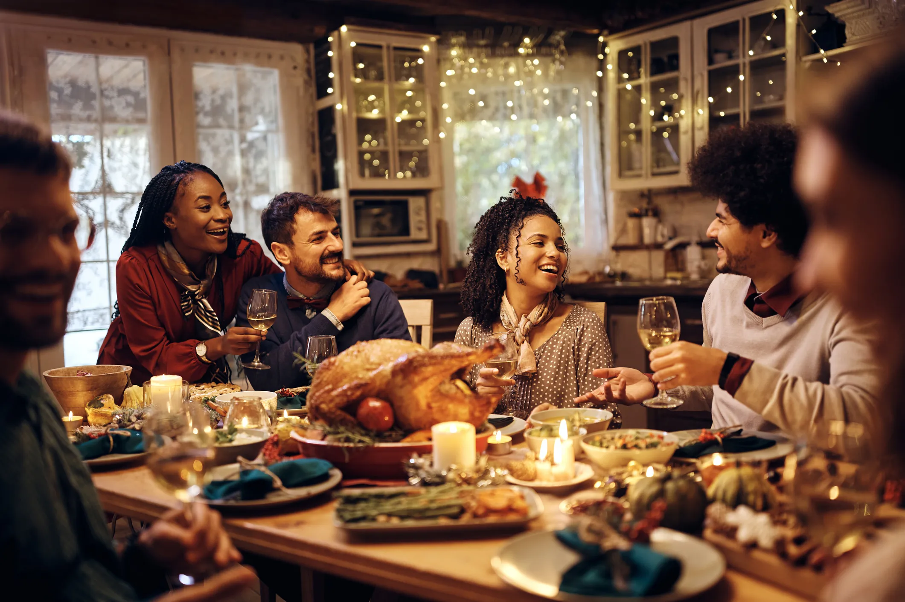
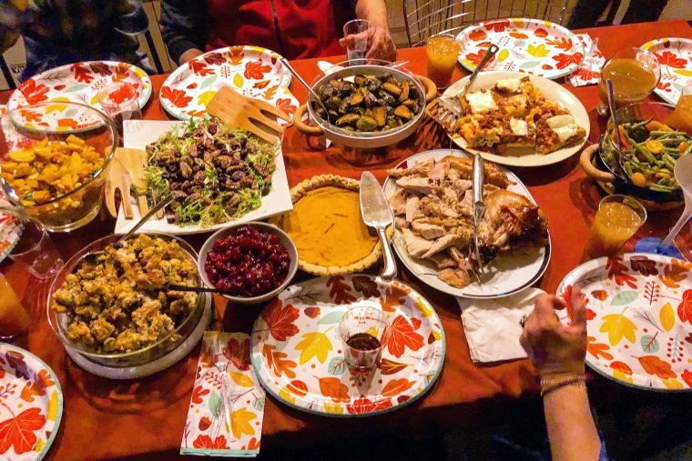
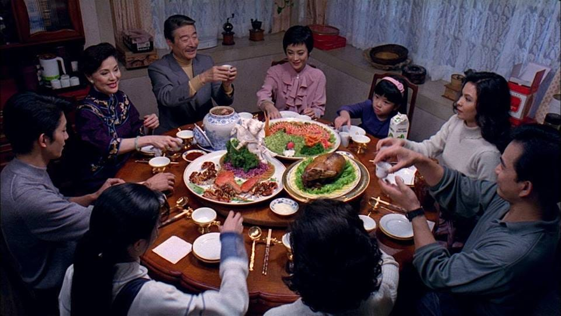
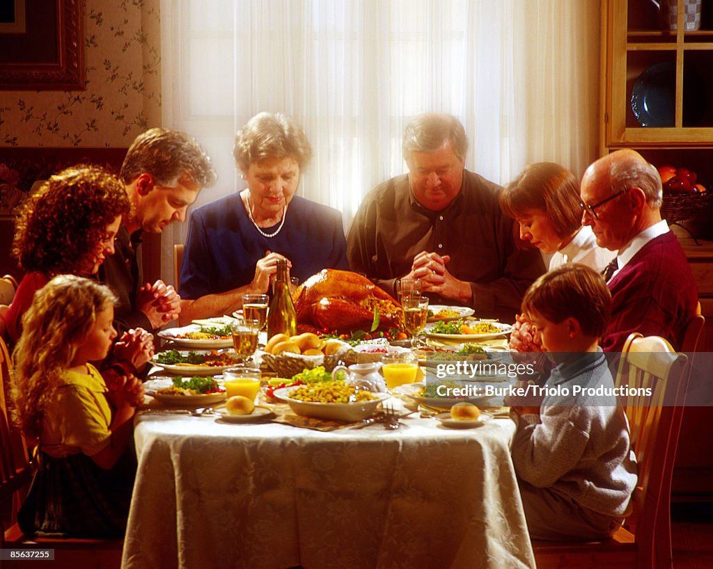
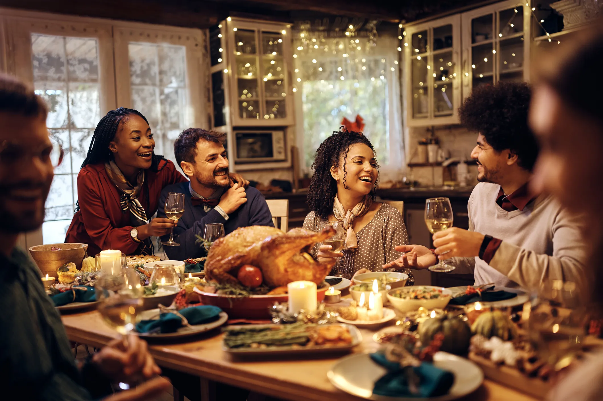
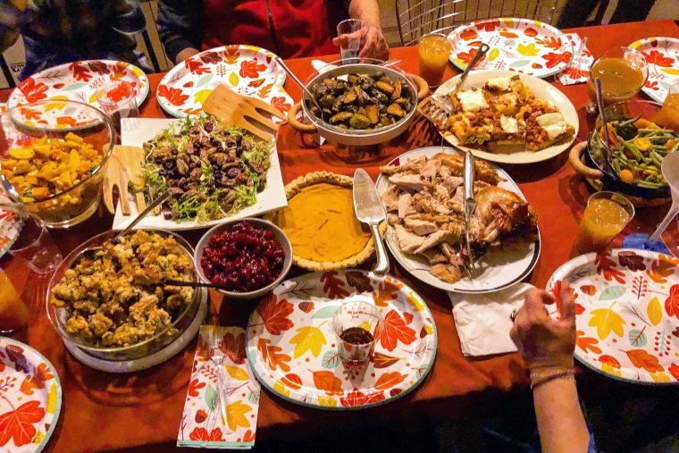
 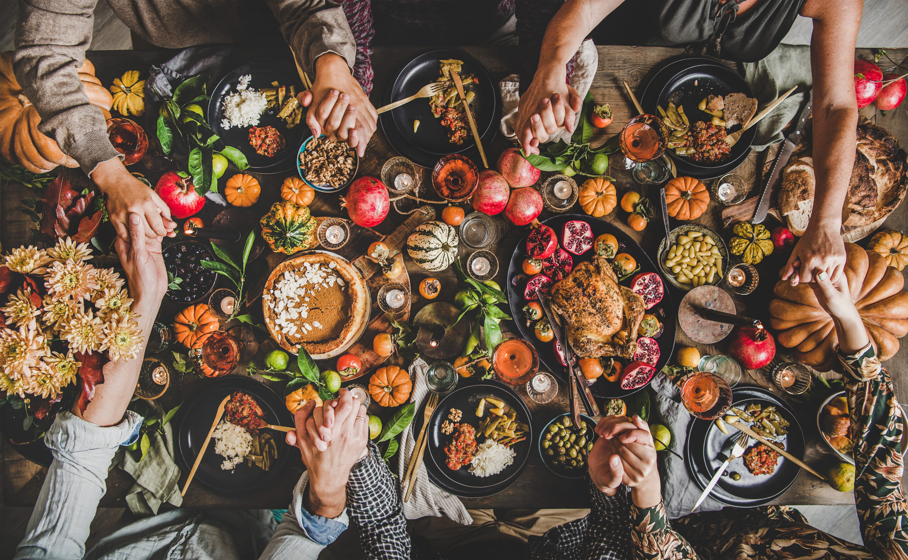
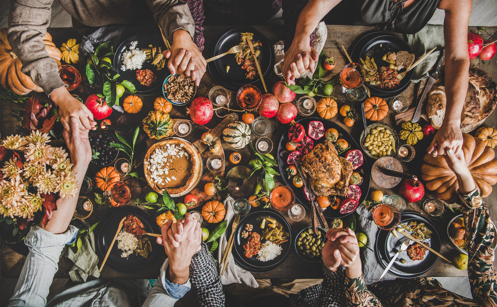
Explore our collection of cherished family recipes and share your own.
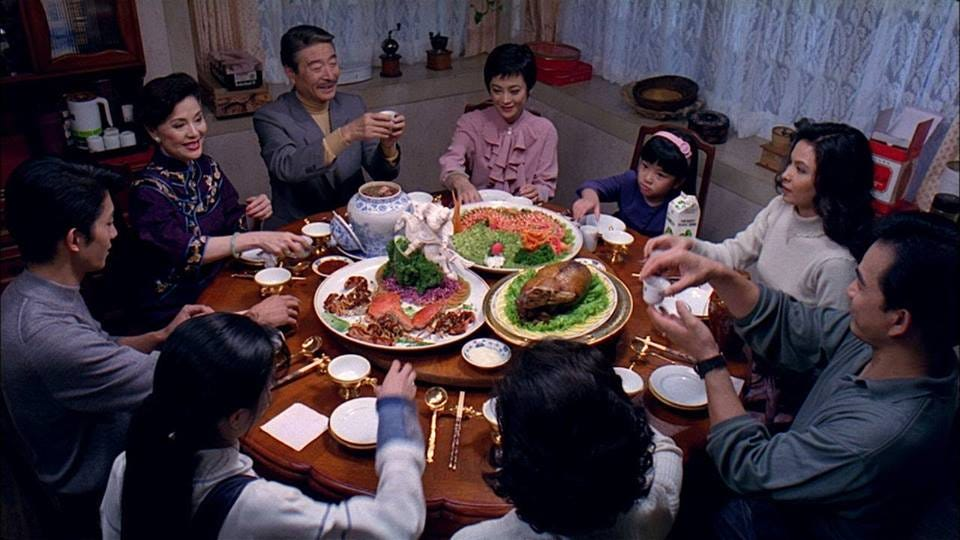
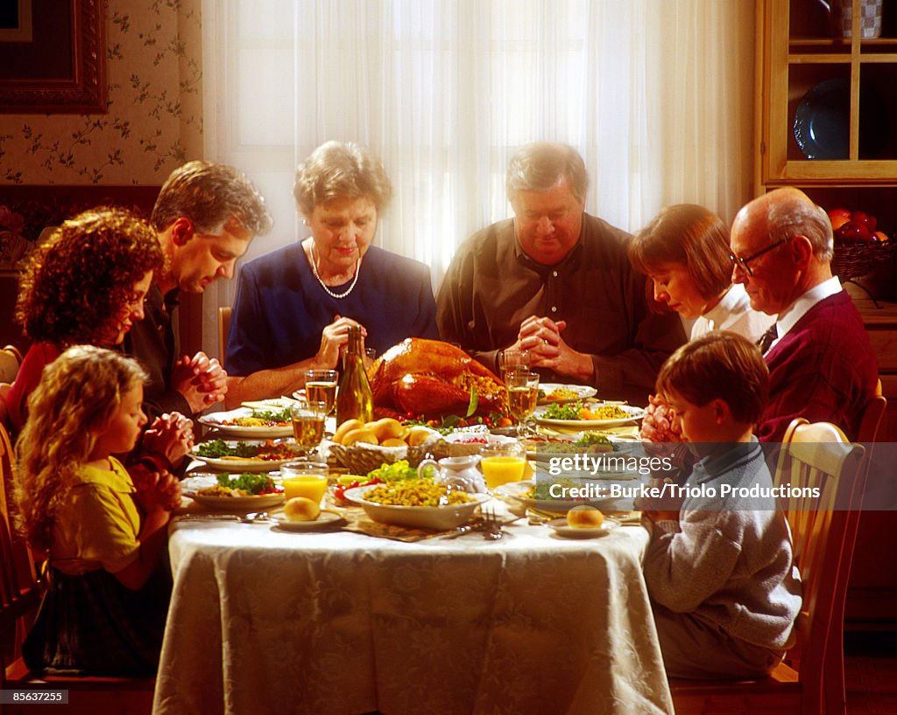
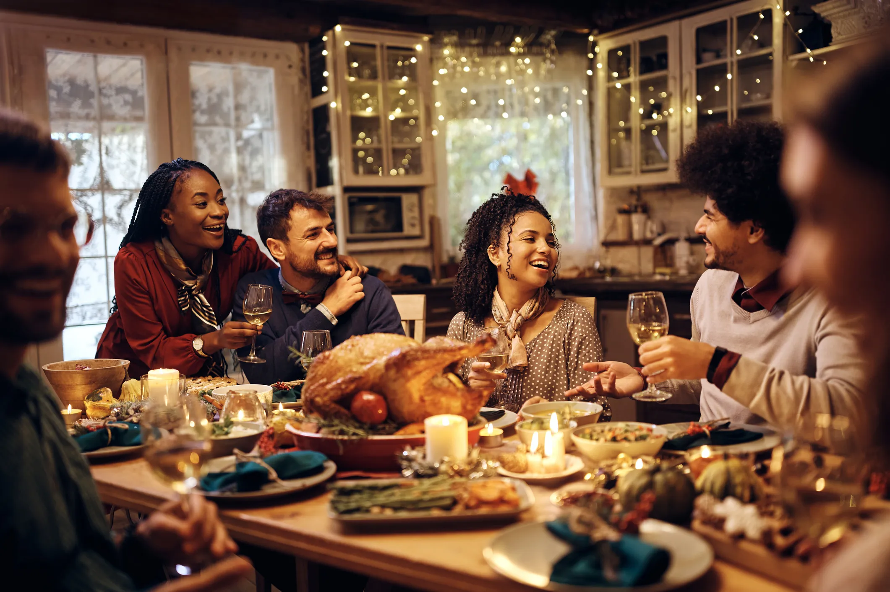
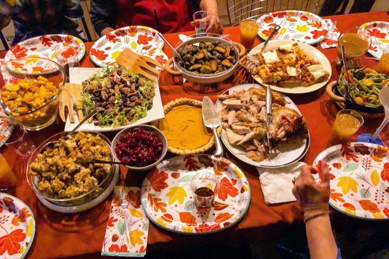
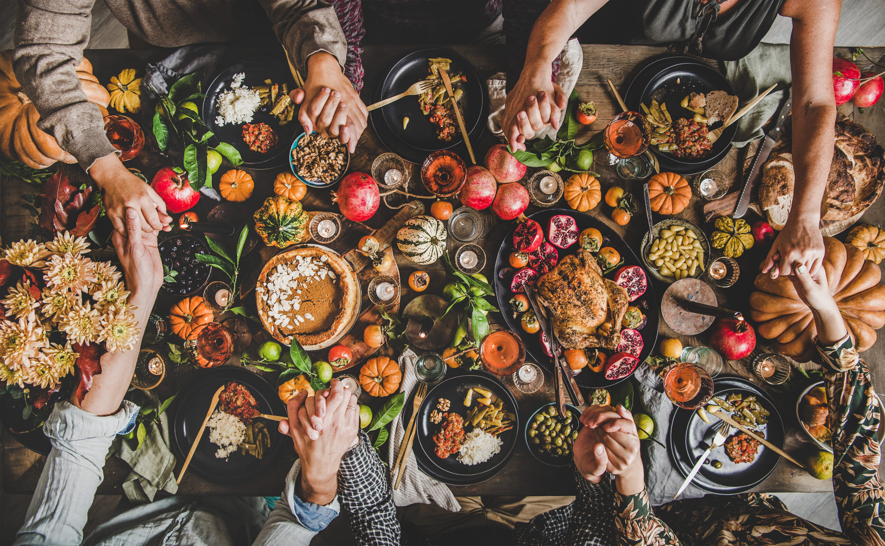